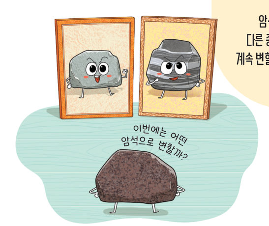
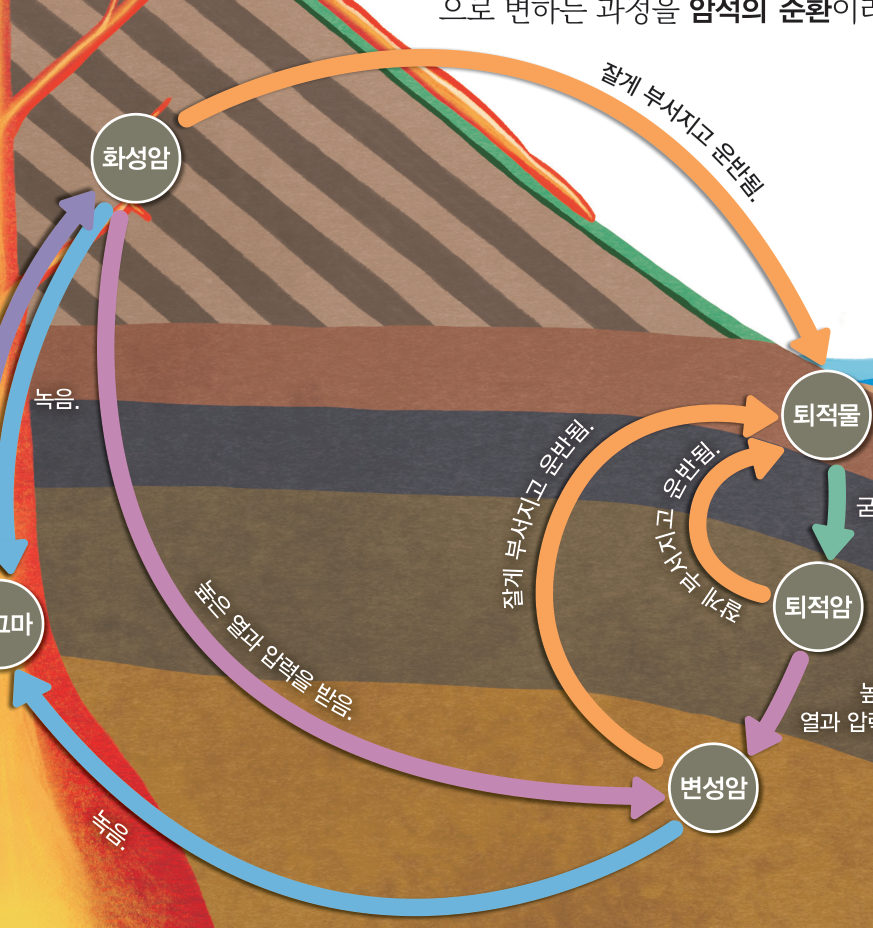
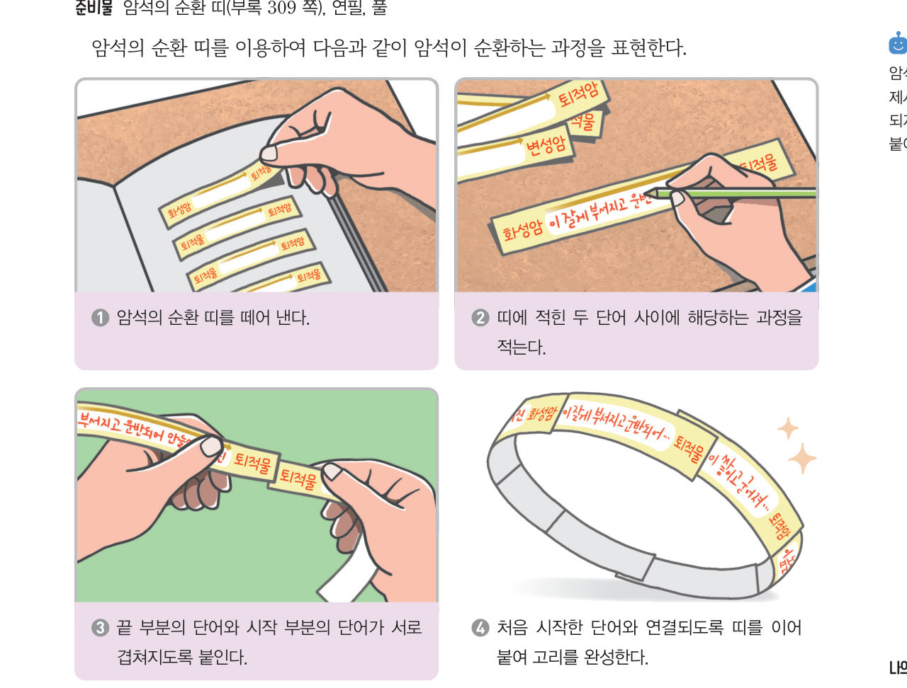

살아있는 교과서 · Ⅱ. 지권의 변화 · 2. 암석의 종류와 순환 · 04 68~69쪽
순환하는
순환하는
암석
“이번에는 어떤 암석으로 변할까?” 암석이 어떻게 다른 종류의 암석으로 계속 변할 수 있을까? 화강암 한 조각이 되어 지구 속과 겉을 여행하며 암석의 순환 고리를 완성해 보자.
🎯 이 단원을 배우면 — 암석이 순환하는 과정을 설명할 수 있다.
교과서암석은 어떻게 순환할까? 68쪽
암석이 지표면에 드러나 오랜 시간 동안 비와 바람 등의 영향을 받으면 부서지고, 부서진 암석이 운반되어 쌓이면 퇴적물이 된다. 퇴적물이 쌓이고 굳어지면 퇴적암이 된다. 그리고 암석이 지하 깊은 곳에서 높은 열과 압력을 받으면 변성암이 된다. 이때 암석이 더 높은 열을 받으면 녹아서 마그마가 되기도 한다. 이 마그마가 식어서 굳어지면 화성암이 된다. 이처럼 암석은 주변 환경이 달라지면 다른 암석으로 변한다. 그림 2-15와 같이 암석이 오랜 시간 동안 끊임없이 다른 암석으로 변하는 과정을 암석의 순환이라고 한다.

암석 여행화강암 조각의 끝없는 여행
지금 암석이 놓인 환경에서 일어날 수 있는 과정을 골라 보자. 미션: 편마암 조각이 포함된 역암 만들기! 여행 기록이 아래에 남아요.
1사고력 편마암 조각이 포함된 역암이 만들어지는 과정을 순서대로 놓으시오.
- 편마암이 잘게 부서지고 운반되어 자갈·모래와 함께 쌓인다.
- 화강암이 지하 깊은 곳에서 높은 열과 압력을 받는다.
- 쌓인 퇴적물이 다져지고 굳어져 역암이 된다.
- 편마암이 만들어져 지표로 드러난다.
해 보기 · 모형 개발 및 이용하기암석의 순환 고리 만들기 69쪽

순환 띠에 적힌 두 단어 사이에 해당하는 과정을 골라 보자.
💬자신이 만든 암석의 순환 고리를 이용하여 암석이 순환하는 과정을 이야기해 보자. (띠를 최대한 길게 이어 보자.)
스스로 확인하기68쪽 학습 목표를 달성했는지 확인해 보자 69쪽
1개념 확인 암석이 오랜 시간 동안 끊임없이 다른 암석으로 변하는 과정을 ( )(이)라고 한다.
🧩 두 번째 블록 · 힌트 조각 2 (69쪽)
퇴적암이 지하 깊은 곳에서 높은 열과 압력을 받으면 ( )이 된다.
5분 테스트순환하는 암석
1지표면의 암석이 비와 바람 등의 영향을 받으면 부서지고, 부서진 암석이 운반되어 쌓이면 이 된다. 이것이 쌓이고 굳어지면 이 되고, 지하 깊은 곳에서 높은 열과 압력을 받으면 이 된다. 더 높은 열을 받으면 녹아서 가 되기도 하며, 이것이 식어서 굳어지면 이 된다.
2그림은 암석이 순환하는 과정이다.
③ (가) , (나)
④ 변성암을 만드는 분홍색 화살표의 작용
⑤ (나)를 만드는 주황색 화살표의 작용
⑥ (나)에서 퇴적암이 만들어질 때 나타나는 줄무늬
④ 변성암을 만드는 분홍색 화살표의 작용
⑤ (나)를 만드는 주황색 화살표의 작용
⑥ (나)에서 퇴적암이 만들어질 때 나타나는 줄무늬
스스로 정리하기암석의 순환
4암석의 순환
암석의 순환: 암석이 주변 환경의 변화에 따라 오랜 시간 동안 끊임없이 다른 (으)로 변하는 과정
| 평가 기준 | 스스로 평가 |
|---|---|
| 지식·이해 암석이 순환하는 과정을 설명할 수 있는가? | |
| 가치·태도 모형을 이용하여 암석의 순환을 옳게 표현하고 적극적으로 참여했는가? |
제출학생 정보 · 제출하기
모든 활동을 마친 뒤 제출하면 전체가 한 번에 채점되고 피드백이 나타나요. 답안은 선생님 스프레드시트(중2 탭)에 기록돼요.